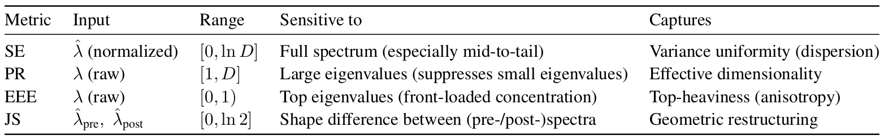

Attention-induced rank collapse. Dong et al. (ICML 2021) showed that self-attention possesses a strong inductive bias toward token uniformity: a pure self-attention network (when skip connections and FFNs are disabled) loses expressive power doubly exponentially with depth. They observed a tug-of-war between self-attention and FFN nonlinearities: attention collapses rank, FFN nonlinearity somehow fights back and keeps transformer networks alive. However, the mechanism of rank inflation through FFN nonlinearity has not been well understood, and their precise role is not quantified. NerVE provides the quantitative answer.
Nonlinearity-induced rank inflation. We show that FFN nonlinearities actively reinject variance into under-utilized directions of the latent space, reawakening dimensions that would otherwise remain inactive, a process we term nonlinearity-induced rank inflation. This is not a passive rescaling; the nonlinearity fundamentally reorganizes the eigenspectrum, flattening its top-heavy structure by spreading variance across a broader set of directions.
NerVE tracks this mechanism through four complementary metrics. Spectral Entropy (SE) and Participation Ratio (PR) both rise after activation, indicating broader variance distribution and higher effective dimensionality. Eigenvalue Early Enrichment (EEE) drops, confirming that the spectrum becomes less top-heavy. Jensen-Shannon divergence (JS) heatmaps reveal where this redistribution is strongest across depth and training; a structured, depth-localized transition band rather than a uniform effect.

Table: Summary of NerVE's four complementary eigen-metrics, their inputs, ranges, spectral sensitivities, and what each captures about the latent space geometry. SE, PR, and EEE characterize a single spectrum; while JS quantifies the information-theoretic distance between the pre- and post-activation, and characterizes nonlinearity-induced geometric transformation. Here, λ denotes the raw eigenvalues, λ̂ the normalized eigenvalues, and D the FFN hidden dimension.
GELU vs. ReLU: who explores more of the latent space? GELU and ReLU follow the same qualitative trajectory (variance reinjection, spectral flattening, distributional reordering) but differ in pace and extent. ReLU stabilizes earlier; GELU progresses more gradually yet ultimately explores a broader subspace, correlating with its lower perplexity. All four metrics correlate strongly with evaluation loss (|r| > 0.92), confirming that spectral dynamics track generalization throughout training.